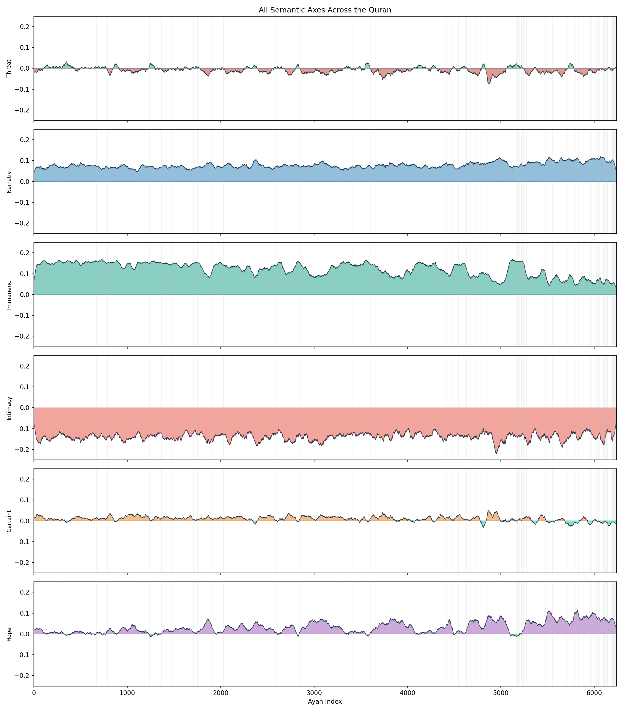
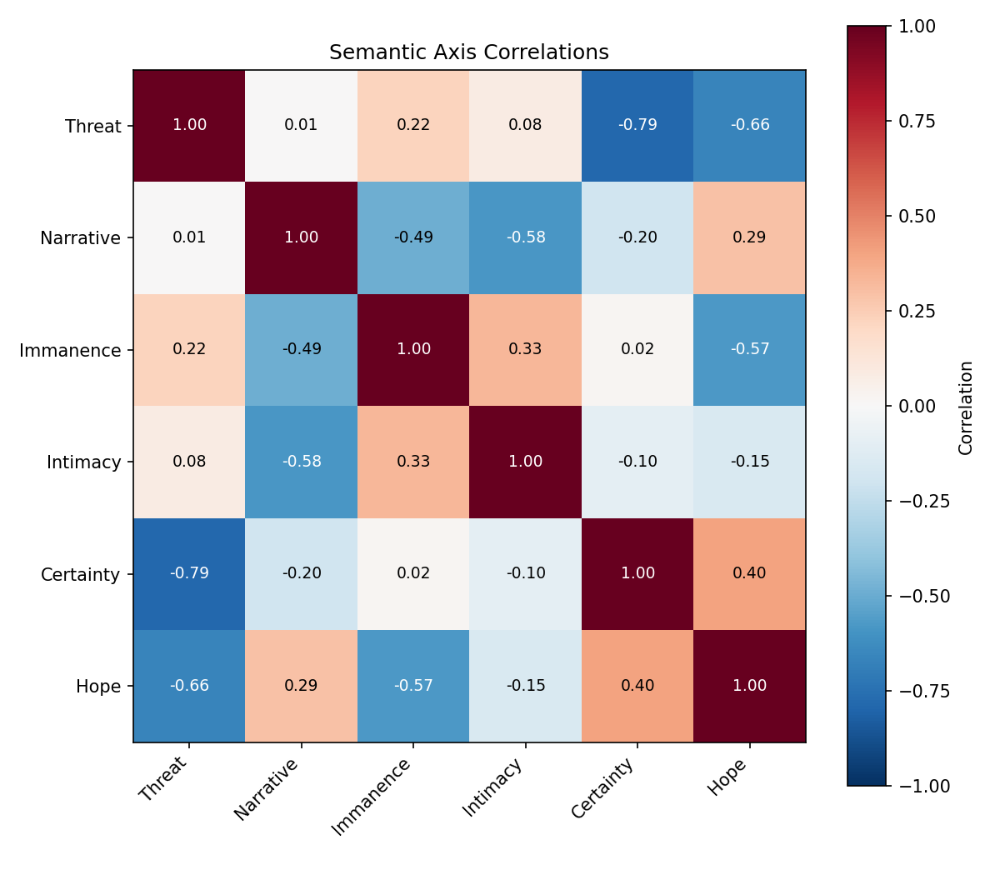
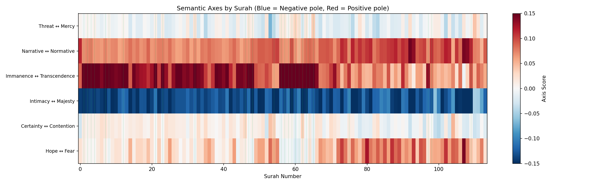

Using language model embeddings, we can detect the rhetorical structure of the Quran without theological interpretation. The text oscillates between warning and reassurance, uses consistently intimate address, and shows distinct Meccan/Medinan signatures.
Methodology
The Core Idea
Modern language models (LLMs) convert text into numerical vectors called embeddings. Similar texts have similar embeddings. We use this to:
Embed every ayah into a 768-dimensional vector
Measure similarity between ayahs using cosine distance
Project onto semantic axes to track rhetorical properties
The Model
We use paraphrase-multilingual-mpnet-base-v2, a transformer model trained on 50+ languages including Arabic. It converts each ayah into a vector that captures its meaning.
Axis Projection
To measure where each ayah falls on a semantic axis (e.g., Threat ↔ Mercy):
Threat Pole
Arabic phrases about punishment, hellfire, destruction
Mercy Pole
Arabic phrases about forgiveness, paradise, guidance
We embed these pole descriptions, then for each ayah compute:
Positive scores lean toward mercy; negative toward threat. This gives us a signed scalar for every ayah on every axis.
SEM-001: Semantic Graph Negative Result
Question
Do surahs with the same muqattaat (mysterious letters) cluster semantically?
Method
Built a similarity graph (60,327 edges) and ran community detection (Louvain algorithm).
Result
Metric
Expected
Actual
Muqattaat community purity
> 50%
18-30%
Surah coherence ratio
> 1.2x
1.01x
Overall similarity
~0.5
0.97
Interpretation
The Quran has uniform semantic density. The entire text is semantically cohesive (~0.97 cosine similarity everywhere). Muqattaat groupings operate at the lexical level (vocabulary patterns), not the semantic level. This doesn't invalidate MUQ-001; it clarifies how the muqattaat function.
SEM-002: Semantic Flow Positive Result
Question
Do semantic properties change at surah boundaries?
Metrics
Novelty: How different is this ayah from the previous 10?
Coherence: How similar to neighboring ±5 ayahs?
Shift: Distance to immediately previous ayah
Result
Semantic metrics across all 6,236 ayahs. Vertical gray lines mark surah boundaries.
Metric
At Surah Boundaries
Elsewhere
Ratio
Novelty
0.162
0.085
1.90x
Key Finding
Surah boundaries are semantic discontinuities. Novelty is nearly 2x higher when a new surah begins. This validates that surahs are meaningful semantic units, not arbitrary divisions.
Meccan vs Medinan
Type
Ayahs
Novelty
Coherence
Meccan
4,613
0.095
0.843
Medinan
1,623
0.065
0.888
Meccan surahs are more thematically varied (higher novelty). Medinan surahs are more focused (higher coherence). This aligns with Islamic scholarship: Meccan revelation addresses diverse spiritual themes; Medinan revelation addresses specific community issues.
SEM-003: Rhetorical Axes Positive Result
The Six Axes
Axis
Negative Pole
Positive Pole
Mean
Threat ↔ Mercy
Punishment, Hell
Forgiveness, Paradise
-0.01
Narrative ↔ Normative
Stories, Prophets
Commands, Laws
+0.08
Immanence ↔ Transcendence
Earth, Worldly
Afterlife, Angels
+0.12
Intimacy ↔ Majesty
Direct address
Cosmic scale
-0.14
Certainty ↔ Contention
Assertion
Polemic
+0.01
Hope ↔ Fear
Promise, Patience
Urgency, Warning
+0.03

All six rhetorical axes across the Quran. Fill color indicates direction (red = positive pole, blue = negative pole).
Key Discoveries
1
Intimate Address Dominates
The Intimacy axis averages -0.14, meaning the Quran consistently addresses readers directly ("O you who believe...") rather than using majestic distance.
2
Transcendence Baseline
The text maintains a transcendent register (+0.12), focusing on afterlife, angels, and the unseen rather than worldly matters.
3
Threat/Mercy Oscillation
Clear waves of warning and reassurance are visible in the flow, consistent with the Quran's described rhetorical pattern of "targhib wa tarhib" (encouragement and warning).
Axis Correlations

Correlation matrix between the six semantic axes.
Striking Finding: Threat ↔ Certainty = -0.79
Passages about threat/punishment are also contentious (arguing with opponents). Passages about mercy/forgiveness are assertive (stating truth with confidence). The rhetorical strategy is encoded in the embedding space.
Per-Surah Signatures

Average axis scores per surah. Blue = negative pole, Red = positive pole. Each surah has a distinct "rhetorical fingerprint."
Conclusions
What We Found
Surahs are real semantic units (1.9x novelty at boundaries)
Meccan and Medinan have distinct signatures (varied vs focused)
Six rhetorical axes are detectable via embedding projection
The text favors intimacy and transcendence as default registers
Warning correlates with polemic; mercy with assertion
What This Is
Computational rhetoric. We detect structure without theology. The patterns exist in the embedding space regardless of interpretation.